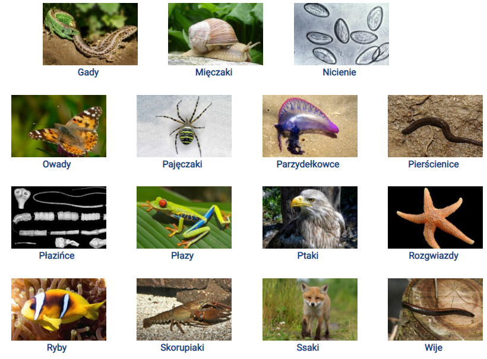

Strona poświęcona dla osób zainteresowanych zwierzętami. Po lewej stronie znajduje się menu ułatwiające poruszać się między podstronami. Zachęcam do zapoznania się z gatunkami zwierząt. Warto również zapoznać się ze zwierzętami domowymi, aby dowiedzieć się jakie z nich możesz posiadać w domu. Poza tym istnieje również odwiedzić stronę zwierząt hodowlanych.
Dokładny opis zwierząt znajdziesz na stronie Ekologia.pl
